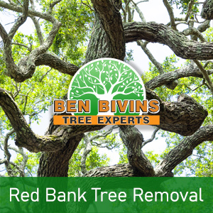
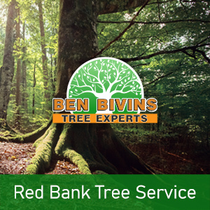

If you are searching for tree service in Red Bank or tree removal in Red Bank, Ben Bivins Tree Experts has you covered. Our family-owned business has been supplying first-rate tree service to the Red Bank community for years.
Red Bank Tree Removal – Trust the Experts

Do you have a dead or ugly tree that should be removed? Tree removal is usually a high risk process that requires the proper equipment and basic safety standards. Even though it may be appealing to get rid of a tree yourself from your property, it can be a decision that puts yourself in danger, without the proper knowledge. There can be various factors why you need a tree removal in Red Bank:- Tree is hindering too much sunlight on your lawn
- Tree is dead or unhealthy as well as a possible safety threat
- Tree is too big and presents a danger if big branches drop
- Tree was damaged in a weather event and is beyond the stage of salvaging
- You are planning on remodeling that will inevitably harm the tree
- Tree is losing lots of branches, leaves, or pine needles
Ben Bivins is fully insured and qualified tree company. Please don’t assume the risk of using an uninsured tree removal company or relying on a friend to perform this type of job. Our team is expertly qualified and our company has the appropriate qualifications to ensure your Red Bank tree removal will be performed in the safest and most effective possible way. Tree removal demands the use of serious machinery and hazardous equipment that should only be left to the pros. Leave it to Ben Bivins Tree Experts! Call us for an estimate on your Red Bank tree removal.
Looking for Tree Service in Red Bank NJ?

We carry out all aspects of Red Bank tree service. Some of these services include:- Tree Trimming – Are trees in your yard overgrown? Is your lawn lacking natural light as a result of an overgrown tree? Trimming a tree’s branches can make a big difference and could allow you to maintain a tree you in any other case considered removing.
- Pruning – Keep your trees happy and healthful. Pruning consists of evaluating a tree’s overall health and deciding to eliminate branches selectively to enhance its wellness and sustainability.
- Crown Reduction – We are able to decrease the scale of your tree’s canopy using this method. Our team will assess your trees and make suggestions to take out certain limbs that will cut back canopy cover.
- Emergency Tree Service – Do you have a downed tree that needs prompt attention? Is there a tree which is close to causing damage if not attended to immediately? You could be a candidate for emergency tree service.
If you’re a Red Bank resident looking for tree service, Call us today. Scheduling varies depending on weather, season and our current work load. We will give you a quotation and inform you of dates available for service after assessing your specific needs.
Red Bank Firewood for Sale
It’s no surprise that a Red Bank tree removal business may have an excess supply of firewood! If you are searching for firewood for a wood burning stove or fireplace, contact Ben Bivins Tree Experts today. Firewood supply availability varies all year round.